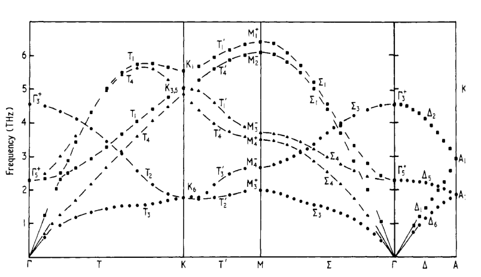

Ab initio thermodynamics for kesterite photovoltaics
Adam J. Jackson
20/5/15
Info
This presentation is available online at https://ajjackson.github.io/ajjackson-phd
About me
2006–2011 Undergraduate MEng Chemical Engineering
- University of Bath
- Experimental research project, industrial placement, design projects
- Reactor design, heat/mass transfer, fluid mechanics
- No quantum mechanics!
2011–2016 Doctoral Training Centre in Sustainable Chemical Technologies
- University of Bath (Depts. of Chemistry and Chem. Eng.)
- 2011–2012 MRes: two short projects
- Oxidation of GaN
- Dissolution of cellulose in ionic liquids
- 2012-2016 PhD project: CZTS
- Research group of Aron Walsh
2016 Research assistant
- Same research group as PhD
- Method/code development
2016–2019 Post-doctoral research assistant (PDRA) at UCL
- Funded by EPSRC to study novel TCOs
CZTS
Introduction to CZTS
- Copper zinc tin sulfide
- Thin-film absorber layer for earth-abundant PV
- p-type "copper-poor" material typically produced
- Poor reproducibility between experimental groups
- Major concerns are low open-circuit voltage and presence of secondary phases
- Reproducibility is a big problem
- Many compositions are being reported

- There is evidence for some compositional flexibility; single-crystal measurements
Choubrac et al. (2012). Inorg. Chem., 51 (6), 3346–3348.
- But there are also micrographs suggesting competing phases
Boero et al. (2015). Mater. Lett., 145, 145–149.
Project aims
- Explore stability of CZTS and secondary phases over a range of thermodynamic conditions
- Relate these constraints to real processing conditions
- Support development of rapid roll-to-roll processing
Methods
Ab initio calculations
FHI-aims was used as the "workhorse" code
| Feature | Benefit |
|---|---|
| All-electron | No PP dependence, consistent reference |
| Atom-centred basis | Vacuum is cheap |
| Optional periodic boundary | Combine accurate crystals and clusters |
| Good scaling | Make use of largest HPC facilities |
Ab initio thermodynamics
- Researchers often refer to DFT ground-state energy as "enthalpy" or "chemical potential"
- This isn't even correct at absolute zero!
- Missing zero-point energy (ZPE)
\( E_0 + ZPE = U^0 = H^0 = A^0 = G^0 \) \( \mu = \frac{\partial G}{\partial n} \)
Vibrational contributions
- The largest thermal contribution is occupation of vibrational states
- Molecules/clusters have a discrete set of vibrational energy levels
- Crystals have long-range interactions analogous to electronic bands

L. Almqvist and R. Stedman (1971), J. Phys. F: Met. Phys., 1, 312.
- Low-frequency "acoustic" modes are simple displacement waves
- High-frequncy "optical" modes involve movement within unit cell
Thermal occupation
- Phonon density of states is needed
- Occupied with Bose-Einstein statistics to obtain \(U\) (internal energy)
- From \(U\), \(C_v\), \(S\) etc. can be obtained by calculus
Lattice dynamics
- Phonopy package used to obtain phonon DOS and perform integration
- Harmonic approximation: atoms in quadratic wells
- Make finite displacements + calculate forces with DFT
- Diagonalise force constants matrix to obtain…
- eigenvalues (frequencies) and eigenvectors (modes)
Results
Reaction energies
- Investigate relative stability of phases against \(T\), \(P\)
- Initially looked at decomposition to binaries
- → Sensitive to temperature, at low S pressure
- Published in J. Mater. Chem. A 10.1039/c4ta00892h

Cu2S + ZnS + SnS + S(g) ⇌ Cu2ZnSnS4
CZTS
- Move to include ternary phases
- Ternary phase diagrams with "open" sulfur content
- Vary chemical potentials with two parameters:
- temperature and pressure
CZTS

CZTS
- Found very narrow stability region for CZTS without CTS
- Presented at conferences, trying to write paper
- Main finding of PhD thesis

Sulfur
Background
- While developing CZTS stability models, found inconsistent treatment of sulfur
- Known to consist of a mixture of allotropes
- Typically one allotrope is assumed to represent vapour phase
- Last model of mixture developed in 1970s, made a lot of assumptions
Generating clusters
- Evolutionary algorithm used to generate candidate clusters, compared with literature
- Used a selection to populate equilibrium model
Thermodynamics
- Vibrations computed with range of DFT XC functionals
- PBE0 frequencies with 96% scale factor provided best fit
- Create "universal" chemical potential of sulfur atoms accounting for equilibrium as \(f(T,P)\)
- Paper published in Chem. Sci. 10.1039/C5SC03088A

End
FAQ
- How did you make those phonon graphics?
- I wrote a code! https://github.com/ajjackson/ascii-phonons
- Presentation https://github.com/ajjackson/ascii-phonons-slides
- I wrote a code! https://github.com/ajjackson/ascii-phonons
FAQ
- How did you make these slides?